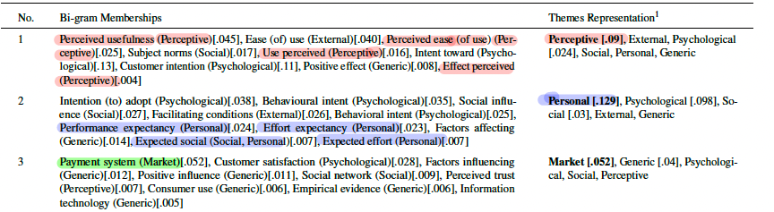

__requires__= 'scipy==1.12.0'
import scipy
print(scipy.__version__)Topic Modeling
Part 0. Jupyter Notebook
If you want to run the entire code, use the Jupyter notebook on my github page.
Part 1.
First things first, we need a bunch of libraries. Since I am not familiar with Docker, I couldn’t resolve the package dependencies. This took so much time for me and I finally managed to fix it with this specific configuration.
The imports look scary, but a lot of them I won’t even use, just added them because I wanted to try things:
# general python imports
import string
import os
import re
import pandas as pd
import numpy as np
import scipy
import itertools
import textract
# NLT imports
import nltk
from nltk import pos_tag
#from nltk.tokenize import regexp_tokenize
from nltk.tokenize import word_tokenize
from nltk.tokenize import sent_tokenize
from nltk.corpus import stopwords
from nltk.stem import WordNetLemmatizer
from nltk.corpus import wordnet
from nltk.stem.porter import PorterStemmer
from nltk.util import ngrams
from nltk.tokenize import RegexpTokenizer
# SKLEARN
from sklearn import metrics
from sklearn import neighbors
from sklearn.feature_extraction.text import CountVectorizer
from sklearn.model_selection import train_test_split
from sklearn.feature_extraction.text import TfidfVectorizer
from sklearn.cluster import KMeans
from sklearn.decomposition import PCA
from sklearn.metrics import mean_squared_error
from sklearn.metrics import r2_score
# GENSIM imports
import gensim
from gensim.models import Phrases
from gensim.models.phrases import Phraser
from gensim.corpora.dictionary import Dictionary
from gensim.corpora import MmCorpus
from gensim.models.tfidfmodel import TfidfModel
from gensim.models import CoherenceModel
from gensim.models import KeyedVectors
# PyLDAvis imports
# import pyLDAvis
# import pyLDAvis.gensim_models as gensimvis
# import pyLDAvis.gensim
# import pyLDAvis.gensim_models
# MISC imports
from collections import Counter
from collections import defaultdict
from string import punctuation
from pprint import pprint
from numpy import triu
#from scipy.linalg.special_matrices import triu
from scipy.sparse import csr_matrix
import fitz # PyMuPDF
# MATPLOT
import matplotlib.pyplot as plt
import seaborn as sns
#%matplotlib inline # do this if you're in jupyter, I still don't know why tho # only run once
nltk.download('stopwords')
nltk.download('punkt')
nltk.download('wordnet')
nltk.download('punkt_tab')
#nltk.download('omw-1.4') # Optional for better language support
#nltk.download('averaged_perceptron_tagger') # For POS tagging
#nltk.download('averaged_perceptron_tagger_eng')CLEANING AND PRE-PROCESSING DATA
I downloaded the pdf of all the papers (143), reading them and extracting meta data based on the following:
import numpy as np
database = np.array([
{
'id': 'string', # unique identifier for the paper following convention P2_#number
'title': 'string', # title of the paper
'AffiliationCountry': 'string' , #name of country the study was conducted in,
'year': 2018-2024, # year of publication a value between 2018 and 2024
'journal': 'string', # name of the journal the paper was published in
'citations': 0-1000, # number of citations the paper has received - not reported in the paper
'year_since': 3, # number of years since publication - not reported in the paper
'cpy': 0, # number of citations per year - not reported in the paper
'keywords': ['TAM', 'mbanking', 'awareness'], # list of keywords, broken into K1-K10
'abstract': 'string', # abstract of the paper
'F': ['perceived usefulness'], # factors significant in the study, broken into F1-F9
'FN': ['another factor'], # factors not significant in the study, broken into FNS1-FNS4
'limit': ['geographical context'], # limitations of the study, broken into LIMIT1-LIMIT3
'typeofResearch': 'string', # type of research conducted in the study
'methods': ['regression analysis'], # methods used in the study, broken into METHOD1-METHOD4
'theory': ['TAM'] # theories used in the study, broken into THEORY1-THEORY4
'sampleSize': 100, # sample size of the study
'tech': 'string', # main technology studied
'man_theme': 'string', # Theme manually assigned by me
'algo_theme': 'string', # Theme assigned by the algorithm
'decision_Theme': 'string', # Final theme of the paper
'Score_Sig': 0.0, # % of significance for factors
'Score_NOT_Sig': 0.0, # % of non-significance for factors
}
])Idea for future
🤖 Build an Agentic AI application that automates this process.
The following procedures are implemented for Data Cleaning:
- Turn everything into lower case
- Remove stopwords + additional stopwords such as “bank”, “banking”, “banks”, “mobile”, “mbank”, “mbanking”, “m-bank”, “online”, “digital”, “adoption”, “theory”, “app”, “application”
- Remove punctuation
- Lemming/Stemming
Grabbing the names of the pdf files (you can also do this from the terminal, and have the results be written to a .txt file).
pdf_directory = "./pdfs/"
all_files = os.listdir(pdf_directory)
pdf_files = [file for file in all_files if file.endswith('.pdf')]
output_file = "pdf_file_names.txt"
with open(output_file, "w") as f:
for pdf in pdf_files:
f.write(pdf + "\n")
print(f"PDF file names have been saved to {output_file}")Then saving them in a python dictionary:
name_of_pdfs = {
'p2_101': "Okocha and Awele Adibi - 2020 - Mobile banking adoption by business executives in.pdf",
# ...
}Extract text:
#version one using PyMuPDF - there's also textract
def extract_text_from_pdf(filename):
text = ""
try:
doc = fitz.open(filename)
for page_num in range(doc.page_count):
page = doc.load_page(page_num)
text += page.get_text()
except Exception as e:
print(f"Error reading {filename}: {e}")
return texttext_of_pdfs_v1 = {}
for paper_id, filename in name_of_pdfs.items():
text = extract_text_from_pdf(filename)
text_of_pdfs_v1[paper_id] = text
# Example: Print the extracted text from the first PDF
for paper_id, text in text_of_pdfs_v1.items():
print(f"Text from {paper_id} ({name_of_pdfs[paper_id]}):")
print(text[:500]) # Print the first 500 characters of the text
breakText from p2_101 (Okocha and Awele Adibi - 2020 - Mobile banking adoption by business executives in .pdf): Mobile banking adoption by business executives in Nigeria Foluke Olabisi Okocha1* and Vera Awele Adibi2 1Centre for Learning Resources, Landmark University, Nigeria 2Doctoral student, University of Ibadan, Nigeria *Corresponding author email: dada.foluke@lmu.edu.ng, folukedada@yahoo.com Challenges with the adoption of mobile banking technologies are best understood by studies on adoption. This however requires understanding the factors that influence its adoption in a given region. Technology Acc
Clean text:
stop_words = stopwords.words('english')
stop_words.extend(["bank", "banking", "banks",
"mobile", "mbank", "mbanking", "m-bank", "m bank",
"adoption", "acceptance", "accept", "theory", "technology",
"purpose", "result", "method", #from abstracts
"journal", "volume", "pp", "no", #from journal information
"theory", "app", "application", "usage", "model"])
stemmer = PorterStemmer()
lemmatizer = WordNetLemmatizer()This is just one of the cleaning functions:
def preprocess_Dict(dct):
for k, v in dct.items():
if isinstance(v, list):
processed_list = []
for item in v:
item = item.lower()
item = re.sub(r'http\S+www\S+@\S+', '', item)
item = re.sub(r'(?<=\w)-(?=\w)', ' ', item)
item = re.sub(r'[^a-z0-9\s\n]', '', item)
item = re.sub(r'\s+', ' ', item).strip()
item = re.sub(r'\d+', '', item).strip()
item = " ".join([word for word in item.split() if word not in stop_words])
item = " ".join([stemmer.stem(word) for word in item.split()])
processed_list.append(item)
dct[k] = processed_list
else:
v = v.lower()
v = re.sub(r'http\S+www\S+@\S+', '', v)
v = re.sub(r'(?<=\w)-(?=\w)', ' ', v)
v = re.sub(r'[^a-z0-9\s\n]', '', v)
v = re.sub(r'\s+', ' ', v).strip()
v = re.sub(r'\d+', '', v).strip()
v = " ".join([word for word in v.split() if word not in stop_words])
v = " ".join([stemmer.stem(word) for word in v.split()])
dct[k] = v
return dctSentence Tokenizer:
def tokenizeToSentences(doc):
for k, v in doc.items():
if isinstance(v, bytes):
v = v.decode('utf-8')
v = v.lower()
v = v.replace('\n', ' ')
v = re.sub(r'http\S+www\S+@\S+', '', v)
#v = " ".join([str(s) for s in v])
v = sent_tokenize(v)
doc[k] = v
return doctext_of_pdfs_uncleaned_tokenizedSentences_v1 = tokenizeToSentences(text_of_pdfs_v1)Build uni and bi-grams:
text_of_pdfs_uncleaned_tokenize_words_v1 = {}
text_of_pdfs_uncleaned_tokenize_bigrams_v1 = {}
for k, v in text_of_pdfs_uncleaned_tokenizedSentences_v1.items():
#v is a list of sentences
text_of_pdfs_uncleaned_tokenize_words_v1[k] = [word_tokenize(s) for s in v] #list of lists
text_of_pdfs_uncleaned_tokenize_bigrams_v1[k] = [list(ngrams(sentence, 2)) for sentence in text_of_pdfs_uncleaned_tokenize_words_v1[k]] Clean:
text_of_pdfs_cleaned_tokenize_words_v1 = {}
for k, v in text_of_pdfs_uncleaned_tokenize_words_v1.items():
# v is a list of lists - where each outer list is a sentence, and the inner list is the words in that sentence.
text_of_pdfs_cleaned_tokenize_words_v1[k] = preprocess_listOfLists(v)
text_of_pdfs_cleaned_tokenize_bigrams_v1 = {}
for k, v in text_of_pdfs_cleaned_tokenize_words_v1.items():
text_of_pdfs_cleaned_tokenize_bigrams_v1[k] = [list(ngrams(sentence, 2)) for sentence in v]text_of_pdfs_cleaned_tokenize_words_v1['p2_01'][0][:3][‘doi’, ‘jgim’, ‘global’]
text_of_pdfs_cleaned_tokenize_bigrams_v1['p2_01'][0][:3][(‘doi’, ‘jgim’), (‘jgim’, ‘global’), (‘global’, ‘inform’)]
Stich the bi-grams together:
text_of_pdfs_cleaned_tokenize_bigrams_combined_v1 = {}
for k, v in text_of_pdfs_cleaned_tokenize_bigrams_v1.items():
text_of_pdfs_cleaned_tokenize_bigrams_combined_v1[k] = [[f"{a} {b}" for a, b in sublist] for sublist in v]
text_of_pdfs_cleaned_tokenize_bigrams_combined_v1['p2_01'][0][:3][‘doi jgim’, ‘jgim global’, ‘global inform’]
Generate Dictionary and Corpuses for unigrams and bigrams, and save them to file (you can read these files in later runs of the program):
def generate_dictionary(text, name):
"""
As input takes in the text to build the dictionary for and the name of a .mm file
"""
dictionary = Dictionary(text)
corpus = [dictionary.doc2bow(review) for review in text]
filename = f"{name}.mm"
MmCorpus.serialize(filename, corpus)
return dictionary, corpuspapers_dictionary_unigrams_v1 = {}
papers_corpus_unigrams_v1 = {}
for k, v in text_of_pdfs_cleaned_tokenize_words_v1.items():
papers_dictionary_unigrams_v1[k] = generate_dictionary(v, 'mmcorpus_unigrams')[0]
papers_corpus_unigrams_v1[k] = generate_dictionary(v, 'mmcorpus_unigrams')[1]papers_dictionary_bigrams_v1 = {}
papers_corpus_bigrams_v1 = {}
for k, v in text_of_pdfs_cleaned_tokenize_bigrams_combined_v1.items():
papers_dictionary_bigrams_v1[k] = generate_dictionary(v, 'mmcorpus_bigrams')[0]
papers_corpus_bigrams_v1[k] = generate_dictionary(v, 'mmcorpus_bigrams')[1]Additionally, I combine all the PDFs and run this for the entire Database.
entire_database_listoflists_unigrams_v1 = []
for value in text_of_pdfs_cleaned_tokenize_words_v1.values():
entire_database_listoflists_unigrams_v1.extend(value)
entire_database_listoflists_bigrams_v1 = []
for value in text_of_pdfs_cleaned_tokenize_bigrams_combined_v1.values():
entire_database_listoflists_bigrams_v1.extend(value)# database_dictionary_unigrams = {}
# database_corpus_unigrams = {}
database_dictionary_unigrams_v1 = generate_dictionary(entire_database_listoflists_unigrams_v1, 'mmcorpus_Database_unigrams_v1')[0]
database_corpus_unigrams_v1 = generate_dictionary(entire_database_listoflists_unigrams_v1, 'mmcorpus_Database_unigrams_v1')[1]database_dictionary_bigrams_v1 = generate_dictionary(entire_database_listoflists_bigrams_v1, 'mmcorpus_Database_bigrams_v1')[0]
database_corpus_bigrams_v1 = generate_dictionary(entire_database_listoflists_bigrams_v1, 'mmcorpus_Database_bigrams_v1')[1]Printing top 50 words across the corpus:
# ---------------------- START OF CHATGPT CODE ----------------------
def print_top_50_words(corpus, dictionary):
total_word_count = defaultdict(int)
word_weights = defaultdict(float)
for word_id, word_count in itertools.chain.from_iterable(corpus):
total_word_count[word_id] += word_count
sorted_tota_words_count = sorted(total_word_count.items(), key = lambda w: w[1], reverse = True)
tfidf = TfidfModel(corpus)
for doc in corpus:
tfidf_weights = tfidf[doc] # Calculate TF-IDF for the review
for term_id, weight in tfidf_weights:
word_weights[term_id] += weight # Aggregate the weight for the term
sorted_word_weights = sorted(word_weights.items(), key=lambda x: x[1], reverse=True)
# Print the top 50 terms with their weights
top_50_words = [(dictionary.get(term_id), weight) for term_id, weight in sorted_word_weights[:50]]
for word, weight in top_50_words:
print(word, weight)
# ---------------------- END OF CHATGPT CODE ----------------------Uni-grams over the entire database:
print_top_50_words(database_corpus_unigrams_v1, database_dictionary_unigrams_v1)use 1710.4405813502553
al 1500.5918177863637
et 1495.2598944189729
studi 1254.889113401414
servic 1177.5025518831014
research 1155.4801330260996
model 1093.757883374598
intent 1085.622080362571
inform 1035.95718724093
market 1032.669725701611
manag 1020.5243612360091
custom 1011.465319080724
perceiv 975.0912634817644
consum 959.7309079460276
and many more…
Bi-grams over the entire database:
print_top_50_words(database_corpus_bigrams_v1, database_dictionary_bigrams_v1)et al 1065.4586868386625
intern market 424.5870797007975
inform manag 324.417783324221
http doiorg 272.8802285987675
inform system 259.07233958915
intent use 247.3467671477514
behavior intent 207.71672202444856
eas use 206.32538882113823
comput human 183.94284111390388
perceiv use 183.0881496709403
human behavior 179.3628870311971
and many more…
Build an LDA model, but I want to test anywhere from 5 to 15 topic numbers, so I’ll leave this as a parameter to pass to this function. I left the other parameters as is. You of course need to pass in your corpus (text) and dictionary (you created above).
def build_lda_model(n_topic, corpus_, dictionary_):
lda_model = gensim.models.ldamodel.LdaModel(corpus = corpus_,
num_topics = n_topic,
id2word = dictionary_,
random_state = 100,
update_every = 1,
chunksize = 1000,
passes = 10,
alpha = 'auto',
per_word_topics = True)
return lda_modelHere’s where I train 11 different models passing in different values for number of topics. I save each model in a list.
def train_models(corpus_, dictionary_):
list_to_hold_models = []
topic_n_to_try = [5, 6, 7, 8, 9, 10, 11, 12, 13, 14, 15]
for i in range(len(topic_n_to_try)):
list_to_hold_models.insert(i, build_lda_model(topic_n_to_try[i], corpus_, dictionary_))
return list_to_hold_modelsYou can calculate both perplexity and coherence. Coherence is more straightforward: It’s a measure of how correct your model is. Perplexity, not that difficult, it’s how off you are. So, you want higher coherence, and lower perplexity. It’s easier to just focus on one of them. But for practice, I did both!
def calculate_perplexity(model, corpus_):
perplexity = model.log_perplexity(corpus_)
return perplexity
def calculate_coherence(model, text, dictionary_):
coherence_model_lda = CoherenceModel(model = model, texts = text, dictionary = dictionary_, coherence='c_v')
coherence_lda = coherence_model_lda.get_coherence()
return coherence_ldaHere’s how to compare models: build a table with columns Num_Topics and values of Coherence and Perplexity for each model.
def build_model_comparison_table(list_of_models, corpus_, dictionary_, data):
tracker = 5
models_perplexity = []
models_coherence = []
models_topics = [5, 6, 7, 8, 9, 10, 11, 12, 13, 14, 15]
for model in list_of_models:
models_perplexity.append(calculate_perplexity(model, corpus_))
models_coherence.append(calculate_coherence(model, data, dictionary_))
tracker += 1
if tracker == 10:
print("Successfully generated model comparison table.")
models_df = pd.DataFrame({
'Num_Topics': models_topics,
'Coherence': models_coherence,
'Perplexity': models_perplexity,
})
return models_dfYou can either look at the values, or have this code find you the best. Here, I pick the maximum coherence and minimum perplexity. But, what if it’s two difference values? As in, for example, topic number 5 gives the highest coherence but also the highest perplexity, and topic number 10 gives the lowest perplexity but lower coherence. Which do you choose? Well, I decided they’re both equally as important, so I come up with a score for each topic number that’s just the weighted average of coherence and perplexity. Or, save yourself the headache and just use one metric.
def find_best_model(models_df):
print("Number of topics with the maximum Coherence is ", models_df.loc[models_df['Coherence'].idxmax(), 'Num_Topics'])
print("Number of topics with the minimum Perplexity is ", models_df.loc[models_df['Perplexity'].idxmin(), 'Num_Topics'])
if models_df.loc[models_df['Coherence'].idxmax(), 'Num_Topics'] == models_df.loc[models_df['Perplexity'].idxmin(), 'Num_Topics']:
best_model_row = models_df.loc[models_df['Perplexity'].idxmin()]
best_number_of_topics = best_model_row['Num_Topics']
else:
models_df['Normalized_Perplexity'] = (models_df['Perplexity'] - models_df['Perplexity'].min()) / (models_df['Perplexity'].max() - models_df['Perplexity'].min())
models_df['Normalized_Coherence'] = (models_df['Coherence'] - models_df['Coherence'].min()) / (models_df['Coherence'].max() - models_df['Coherence'].min())
models_df['Inverted_Perplexity'] = 1 - models_df['Normalized_Perplexity'] # because smaller is better
weight_preplexity = 0.5
weight_coherence = 0.5
models_df['Score'] = weight_coherence * models_df['Normalized_Coherence'] + weight_preplexity * models_df['Inverted_Perplexity']
best_model_row = models_df.loc[models_df['Score'].idxmax()]
best_number_of_topics = best_model_row['Num_Topics']
print(best_model_row)
return best_model_row, best_number_of_topics
def pick_best_model(num, m):
"""
Model inputs are:
num = best number of topics found according to find_best_model()
m = list of models
"""
model_index = num - 5
model_index = int(model_index)
best_model = m[model_index]
return best_model
def print_topics(model, corpus):
pprint(model.print_topics())
doc_lda = model[corpus]
return doc_ldaTopic Modeling - Unigrams
unigram_models_v1 = train_models(database_corpus_unigrams_v1, database_dictionary_unigrams_v1)Here are the results for unigram models:
unigram_model_comparison_v1 = build_model_comparison_table(unigram_models_v1, database_corpus_unigrams_v1, database_dictionary_unigrams_v1, entire_database_listoflists_unigrams_v1)
unigram_model_comparison_v1| Num_Topics | Coherence | Perplexity |
|---|---|---|
| 0 | 5 | 0.436565 |
| 1 | 6 | 0.413618 |
| 2 | 7 | 0.469700 |
| 3 | 8 | 0.400105 |
| 4 | 9 | 0.452116 |
| 5 | 10 | 0.420971 |
| 6 | 11 | 0.446276 |
| 7 | 12 | 0.454530 |
| 8 | 13 | 0.409933 |
| 9 | 14 | 0.418211 |
| 10 | 15 | 0.406770 |
unigram_best_row_v1 = find_best_model(unigram_model_comparison_v1)[0]
unigram_best_n_topics_v1 = find_best_model(unigram_model_comparison_v1)[1]Number of topics with the maximum Coherence is 7
Number of topics with the minimum Perplexity is 15
Num_Topics 12.000000
Coherence 0.454530
Perplexity -9.011387
Normalized_Perplexity 0.636029
Normalized_Coherence 0.782020
Inverted_Perplexity 0.363971
Score 0.572996
Name: 7, dtype: float64
Number of topics with the maximum Coherence is 7
Number of topics with the minimum Perplexity is 15
Num_Topics 12.000000
Coherence 0.454530
Perplexity -9.011387
Normalized_Perplexity 0.636029
Normalized_Coherence 0.782020
Inverted_Perplexity 0.363971
Score 0.572996
Name: 7, dtype: float64
unigram_best_model_v1 = pick_best_model(unigram_best_n_topics_v1, unigram_models_v1)
print("Best Unigram model is (V1):", unigram_best_model_v1)Best Unigram model is (V1): LdaModel(num_terms=27200, num_topics=12, decay=0.5, chunksize=1000)
Topic Modeling - Bigrams
bigram_models_v1 = train_models(database_corpus_bigrams_v1, database_dictionary_bigrams_v1)And the bigrams:
bigram_model_comparison_v1 = build_model_comparison_table(bigram_models_v1, database_corpus_bigrams_v1, database_dictionary_bigrams_v1, entire_database_listoflists_bigrams_v1)
bigram_model_comparison_v1| Num_Topics | Coherence | Perplexity |
|---|---|---|
| 0 | 5 | 0.558434 |
| 1 | 6 | 0.535400 |
| 2 | 7 | 0.542287 |
| 3 | 8 | 0.515335 |
| 4 | 9 | 0.523767 |
| 5 | 10 | 0.526290 |
| 6 | 11 | 0.523879 |
| 7 | 12 | 0.513803 |
| 8 | 13 | 0.510867 |
| 9 | 14 | 0.554809 |
| 10 | 15 | 0.582336 |
bigram_best_row_v1 = find_best_model(bigram_model_comparison_v1)[0]
bigram_best_n_topics_v1 = find_best_model(bigram_model_comparison_v1)[1]Number of topics with the maximum Coherence is 15
Number of topics with the minimum Perplexity is 15
Num_Topics 15.000000
Coherence 0.582336
Perplexity -24.581214
Name: 10, dtype: float64
Number of topics with the maximum Coherence is 15
Number of topics with the minimum Perplexity is 15
Num_Topics 15.000000
Coherence 0.582336
Perplexity -24.581214
Name: 10, dtype: float64
bigram_best_model_v1 = pick_best_model(bigram_best_n_topics_v1, bigram_models_v1)
print("Best Unigram model is (V1):", bigram_best_model_v1)Best Unigram model is (V1): LdaModel(num_terms=306163, num_topics=15, decay=0.5, chunksize=1000)
Pick Best Model
This is different from my dissertation because I actually didn’t upload all the pdf’s here, and also I’m looking at both scores where I only looked at Coherence. Also, 15 topics is way too many.
def model_score(p, c, wp = 0.5, wc = 0.5):
""" Calculates model score with 0.5 weights as default"""
score = (1 - p) * wp + c * wc
return scoreprint("Best unigram model's score is (V1):", model_score(-9.011387,0.454530))
print("Best bigram model's score is (V1):", model_score(-24.581214,0.582336))| NGRAM | Perplexity | Coherence | # of topics | Score |
|---|---|---|---|---|
| UNI | -9.011387 | 0.454530 | 12 | 5.2329585 |
| BI | -24.581214 | 0.582336 | 15 | 13.081775 |
The best model overall is therefore bigram_best_model.
I chose bigrams, but went with 8-9 topics.
best_topic_model_v1 = bigram_best_model_v1
number_of_topics = 8print_topics(best_topic_model_v1, database_corpus_bigrams_v1)
Topic Modeling using Keywords
keywordsDf = df.loc[:,'K1':'K10']
keywords_across_db = keywordsDf.values.flatten().tolist()import math
empty_or_na_count = sum(1 for x in keywords_across_db if x in [None, "", ' '] or (isinstance(x, float) and math.isnan(x)))
print(f"Number of empty or NA values: {empty_or_na_count}")
keywords_across_db = [x for x in keywords_across_db if x not in [None, "", ' '] and not (isinstance(x, float) and math.isnan(x))]
keywords_across_db_nodup = list(set(keywords_across_db))from transformers import BertTokenizer, BertModel
tokenizer = BertTokenizer.from_pretrained('bert-base-uncased')
model_bert = BertModel.from_pretrained('bert-base-uncased')
def get_embedding(text):
inputs = tokenizer(text, return_tensors='pt', truncation=True, padding=True, max_length=20)
with torch.no_grad():
outputs = model_bert(**inputs)
return outputs.last_hidden_state.mean(dim=1).squeeze().numpy()def print_clusters(n_clusters, list_of_words):
clusters = {i: [] for i in range(n_clusters)}
for word, label in zip(list_of_words, labels):
clusters[label].append(word)
for label, words in clusters.items():
print(f"Cluster {label}:")
for word in words:
print(f" {word}")
print("\n")
# Explain clusters
print("Cluster explanations based on semantics and ideas:")
for label, words in clusters.items():
print(f"Cluster {label} might be related to:")
for word in words:
print(f" {word}")
print("\n")import torch
keyword_embeddings = np.array([get_embedding(phrase) for phrase in keywords_across_db_nodup])
n_clusters = number_of_topics
kmeans = KMeans(n_clusters = n_clusters, random_state = 0)
kmeans.fit(keyword_embeddings)
labels = kmeans.labels_print_clusters(n_clusters, keywords_across_db_nodup)